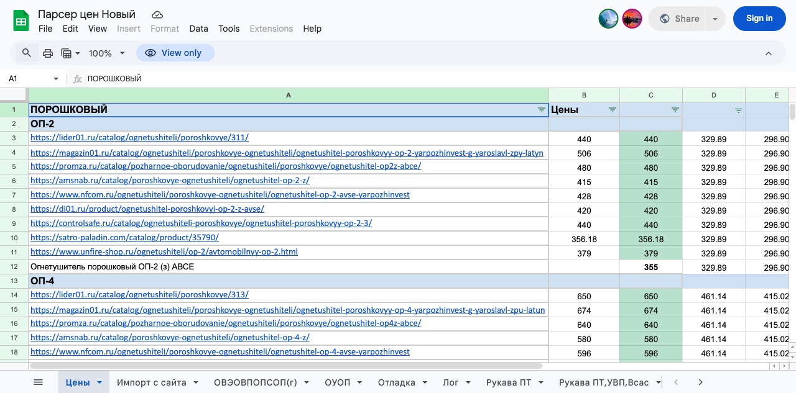

Парсер цен по ссылкам. Google Sheets + Apps Script
Кейс. В таблице ссылки на товары лежат в колонке A, а в колонке B автоматически появляется розничная цена. Работает с разными магазинами, без ручного копипаста.
Задача
Нужна была таблица, где можно быстро обновлять розничные цены по списку URL.
- Вход: лист «Цены», колонка A. Ссылки на карточки товаров в разных интернет магазинах.
- Выход: колонка B. Числовая цена, которую можно дальше использовать в расчётах.
- Важно: скрипт трогает только A и B, остальные столбцы не ломает.
Что сделано
- Apps Script с меню «Цены» и пакетной обработкой, чтобы не упираться в лимит времени выполнения.
- onEdit (опционально): если правят колонку A и в B пусто, цена подтягивается автоматически. Большие вставки уходят в пакет, чтобы не зависнуть.
- Логи: отдельные листы «Лог» и «Отладка» с ротацией, чтобы история не разрасталась бесконечно.
- Парсинг цены: цепочка fallback-методов под реальную вёрстку магазинов (microdata itemprop=price, JSON-LD, специальные случаи).

Как это используется
- Обновить все: пройти строки 2..lastRow и заполнить цены.
- Только пустые: обновить только те строки, где есть URL и B пустая.
- Только выделение: обновить цену для выделенного диапазона.
При необходимости добавляется условное форматирование, чтобы сразу видеть строки с проблемами парсинга или пустыми ссылками.
Ограничения
- Сайты с капчей или тяжёлой защитой могут отдавать заглушку.
- Если на странице нет числовой цены (например «уточняйте у менеджера»), в таблице будет ошибка или пусто.
- Для стабильности предусмотрены задержки между запросами, иначе растёт риск 429.